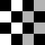

Image Processing Toolbox Demos
Image Transformation

Creating a Gallery of Transformed Images
Exploring a Conformal Mapping
Extracting Slices from a 3-Dimensional MRI Data Set
Padding and Shearing an Image Simultaneously